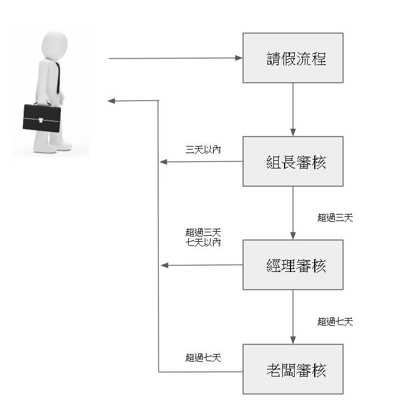

Chain of Responsibility Pattern(責任鍊模式)
因為工作領域關係，程式碼常常需要做一連串的檢查驗證，常常寫完後往回一看發現已經有近百行的扣；若把檢查的項目分門別類，獨立在各自專屬的類別裡處裡，不管是在單元測試或查找問題都能縮小範圍。
適合套用責任鍊模式情境
- 有相同檢查對象
- 必須最後要有結果
- 各個檢查環節互不相影響
範例情境：公司請假系統
- 審核人員身分：組長、經理、老闆
- 審核條件
- 三天以內：由組長審核
- 超過三天且在七天內：由經理審核
- 超過七天：由老闆審核

一般的撰寫方式
1
2
3
4
5
6
7
8
9
10
11
12
13
14
15
16
17
18
19
20
21
22
23
24
25
26
27
28
29
30
31
32/// <summary>
/// 一般撰寫方法
/// </summary>
/// <param name="name">請假人姓名</param>
/// <param name="days">請假天數</param>
/// <returns></returns>
public static AbsenseForm ByNormalCase(string name, int days)
{
//// 建立請假單
var result = AbsenseForm.GenerateInstance(name, days);
if(result.Days <= 3)
{
//// 請假天數小於三天由主管核准
result.Signer = SignerType.TeamLeader;
result.Result = ResultType.Success;
}
else if(result.Days > 3 && result.Days <= 7)
{
//// 請假天數超過三天且小於七天由經理審核
result.Signer = SignerType.Manager;
result.Result = ResultType.Success;
}
else if(result.Days > 7)
{
//// 請假天數超過七天由老闆審核
result.Signer = SignerType.Boss;
result.Result = ResultType.Success;
}
return result;
}分析情境
- 有相同檢查對象 => 審核請假單
- 必須最後要有結果 => 至少要有一個主管級以上審核請假單
- 各個檢查環節互不相影響 => 每個職級審核的天數不同
- 符合以上幾點後來嘗試套用責任鏈模式
擬定請假手續抽象類別
1
2
3
4
5
6
7
8
9
10
11
12
13
14
15
16
17
18
19
20
21
22
23
24
25
26
27
28
29
30
31
32
33
34
35
36
37
38
39
40
41//// 請假手續抽象類別
public abstract class IProcedure
{
//// 是否需繼續檢查/執行
protected bool next;
//// 假單
protected AbsenseForm absenseForm;
//// 設置手續/檢查
public void SetProcedure(IProcedure procedure)
{
if (this.next)
{
this.next = procedure.Execute(ref this.absenseForm);
}
}
//// 取得請假單結果
public AbsenseForm GetAbsenseForm()
=> this.absenseForm;
//// 執行/檢查
internal abstract bool Execute(ref AbsenseForm absenseForm);
}
//// 請假手續基底
public class BasicProcedure : IProcedure
{
public BasicProcedure(AbsenseForm absenseForm)
{
//// 注入請假單
this.absenseForm = absenseForm;
//// 是否需繼續檢查/執行
this.next = true;
}
//// 實作執行/檢查 因為基底類別不做檢查 直接回傳true
internal override bool Execute(ref AbsenseForm absenseForm)
=> true;
}實作檢查設置-以組長為例
1
2
3
4
5
6
7
8
9
10
11
12
13
14
15
16
17
18
19
20
21
22//// 組長審核
public class TeamLeaderProcedure : IProcedure
{
//// 我是組長
const SignerType Signer = SignerType.TeamLeader;
//// 實作執行/檢查
internal override bool Execute(ref AbsenseForm absenseForm)
{
if (absenseForm.Days <= 3)
{
absenseForm.Signer = Signer;
absenseForm.Result = ResultType.Success;
//// 請假成功 無須繼續審核
return false;
}
//// 請假失敗 須繼續審核
return true;
}
}實際撰寫邏輯
1
2
3
4
5
6
7
8
9
10
11
12
13
14
15//// 使用責任練模式寫法
public static AbsenseForm ByDesignPattenCase(string name, int days)
{
//// 建立請假手續
var procedure = new BasicProcedure(AbsenseForm.GenerateInstance(name, days));
//// 組長審核
procedure.SetProcedure(new TeamLeaderProcedure());
//// 經理審核
procedure.SetProcedure(new ManagerProcedure());
//// 老闆審核
procedure.SetProcedure(new BossProcedure());
//// 請假單結果
return procedure.GetAbsenseForm();
}